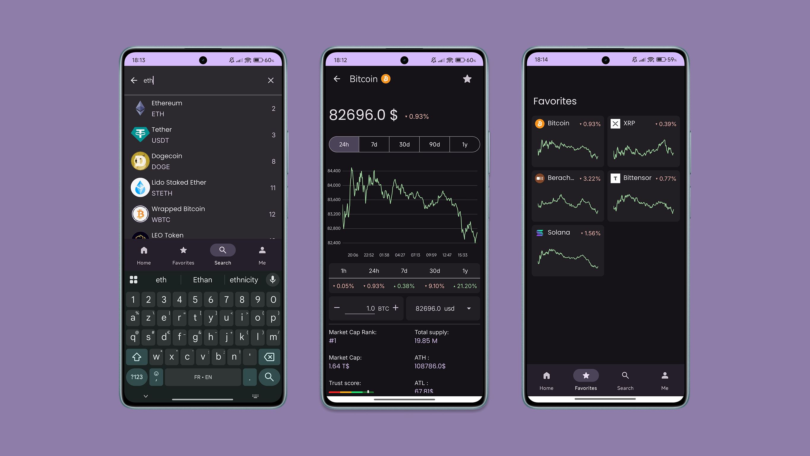
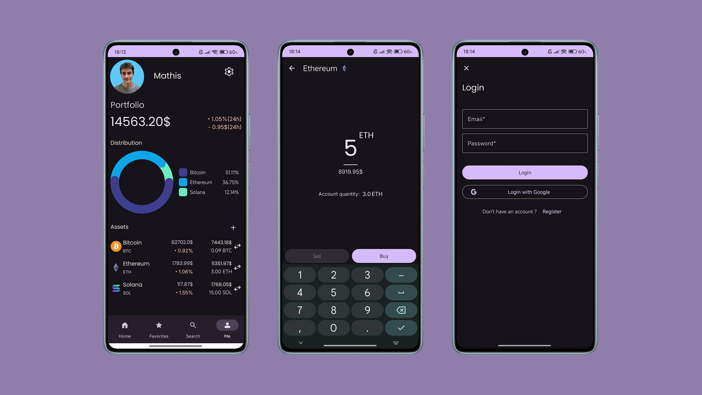

MobCoin
Application de suivi des cryptomonnaies


À propos du projet
MobCoin est une application mobile Android développée en Kotlin dans le cadre d’un projet étudiant en équipe. L’objectif était de couvrir tout le cycle de développement mobile, de la conception UI jusqu’au déploiement continu.
Fonctionnalités principales
- Accueil : liste des cryptos populaires + stats du marché
- Détail : vue d’un coin avec graphique, prix, rang, market cap, etc.
- Favoris : ajout/suppression de coins favoris, persistés par utilisateur
- Recherche : trouver les informations d'un coin via l'API
- Portfolio : simulation d’un portefeuille avec répartition graphique
- Authentification : login/register avec gestion de compte local
Stack & architecture
- Langage : Kotlin + XML (Material 3)
- Architecture : MVVM (ViewModel, Repository, LiveData/StateFlow)
- API : Intégration de CoinGecko via Retrofit
- UI : UI-Kit Material3, conception sur Figma
- Graphiques : MPAndroidChart
- Persistance locale : Room + SharedPreferences
- Navigation : BottomNavigationView + Fragments
- CI/CD : Bitrise (build APK signé à chaque push sur main)
Déploiement
- Build flavors (develop, preproduction, production) avec icônes distinctes
- Build automatique via Bitrise CI/CD